Circulating tumor DNA (ctDNA) variants hold significant promise as cancer biomarkers in liquid biopsies, due to their minimally invasive nature and ability to capture the comprehensive tumor landscape. Identifying and interpreting driver genes and variants in ctDNA from body fluids is crucial for developing personalized treatment strategies, predicting disease prognosis, and assessing therapeutic efficacy.
Here, we present CTDdgv (http://bio-bigdata.hrbmu.edu.cn/CTDdgv), a web server that provides researchers with an advanced platform for identifying TDGs and TDVs in ctDNA. Additionally, CTDdgv enables users to access clinical and functional information for TDGs and TDVs of interest.
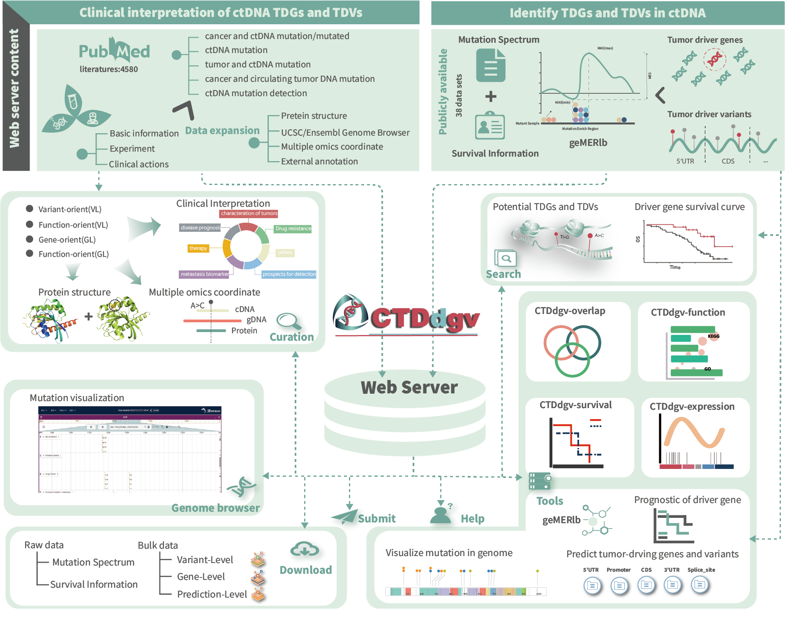
CTDdgv manually curates data from 4,797 published studies as of May 8, 2024. Variants with clinically relevant interpretations are categorized into two main groups. The Variant-Level group comprises 82 diseases, 158 genes, 12 mutation types, and 865 key missense mutations, while the Gene-Level group includes 58 diseases and 132 genes. Additionally, the Prediction-Level data includes 2,305 tumor driver genes and 23,012 tumor driver variants identified from 38 publicly available ctDNA mutation profiles, encompassing 21 cancer types.
1. Users can input disease/gene keywords for quick search, such as TP53, De Differentiated Liposarcoma, etc.
2. Introduction to the functions of each module and corresponding hyperlinks.
3. Click to check quick search results.
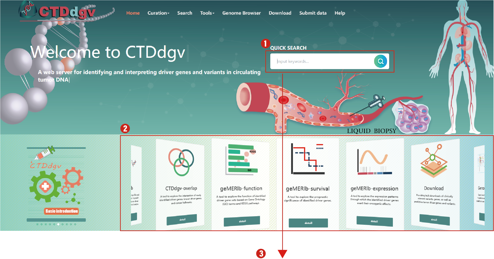
1. Overall data statistics of CTDdgv.
2. Experimentally supported disease types statistics at the Variant-Level and Gene-Level.
3. Experimentally supported genes statistics at the Variant-Level and Gene-Level.
4. Experimentally supported variant types statistics at the Variant-Level.
5. Statistical analysis of missense mutations, which constitute the majority at the experimentally supported variant level.
6. Statistical analysis of disease types in tumor driver variants identified from collected ctDNA mutation spectrums.
7. Statistical analysis of genes in tumor driver variants identified from collected ctDNA mutation spectrums.
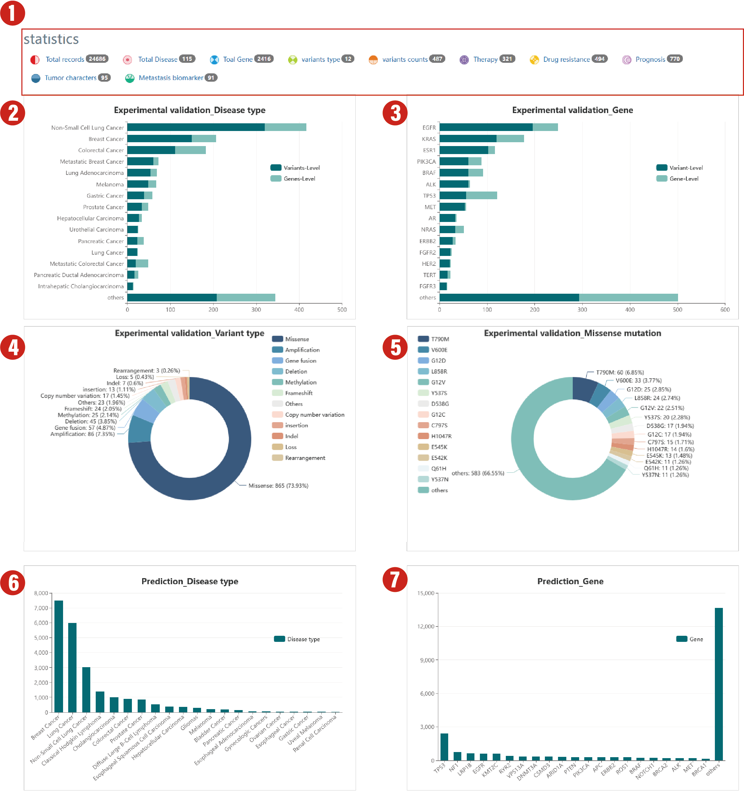
For the diseases or genes entered in the quick search box, search for them in three tables: the experimentally validated Variant-Level, the experimentally validated Gene-Level, and the identified tumor driver genes and variants. Users can obtain the number of record entries at 1 and click on 2 to view specific information about the corresponding results.
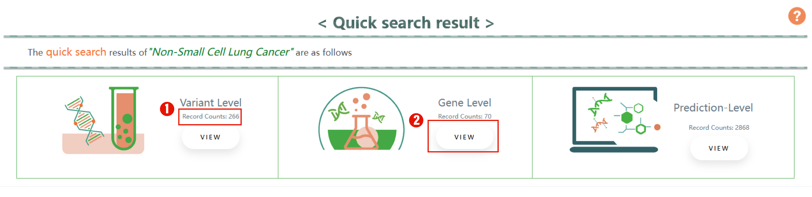
1. Basic introduction and data format explanation of the Variant-Orient (VL) interface.
2. Please select the diseases you wish to query. The right half of the interface allows for rapid matching and addition of diseases.
3. Please select the genes you wish to query. The right half of the interface allows for rapid matching and addition of genes.
4. Please choose the variant type you wish to query. By default, all variant types are selected.
5. Please enter the missense mutations you're interested in, most of which should be specified at the protein level (e.g., G1202R). A few can also be entered using formats such as c.228C>T and chr3: g.37025749T>A. To input multiple mutations, separate them using the Enter key.
6. 'Submit' allows users to submit queries, 'Example' provides query examples, and 'Reset' allows resetting all options.
7. Click to view the explanation of the query results for 'Variant-Orient (VL)'.
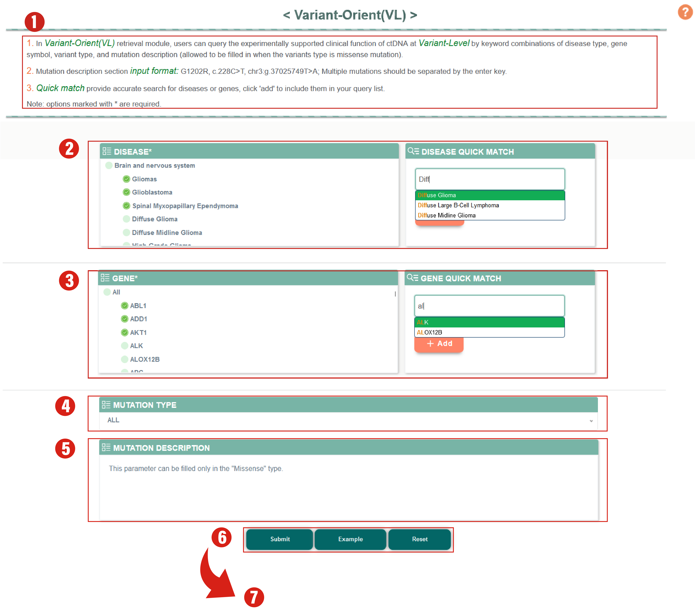
1. Basic introduction and data format explanation of the Function-Orient (VL) interface.
2. Please select the diseases you wish to query. The right half of the interface allows for rapid matching and addition of diseases.
3. Please select the clinical functions you wish to query related to variants.
4. 'Submit' allows users to submit queries, 'Example' provides query examples, and 'Reset' allows resetting all options.
5. Click to view the explanation of the query results for 'Function-Orient (VL)'.
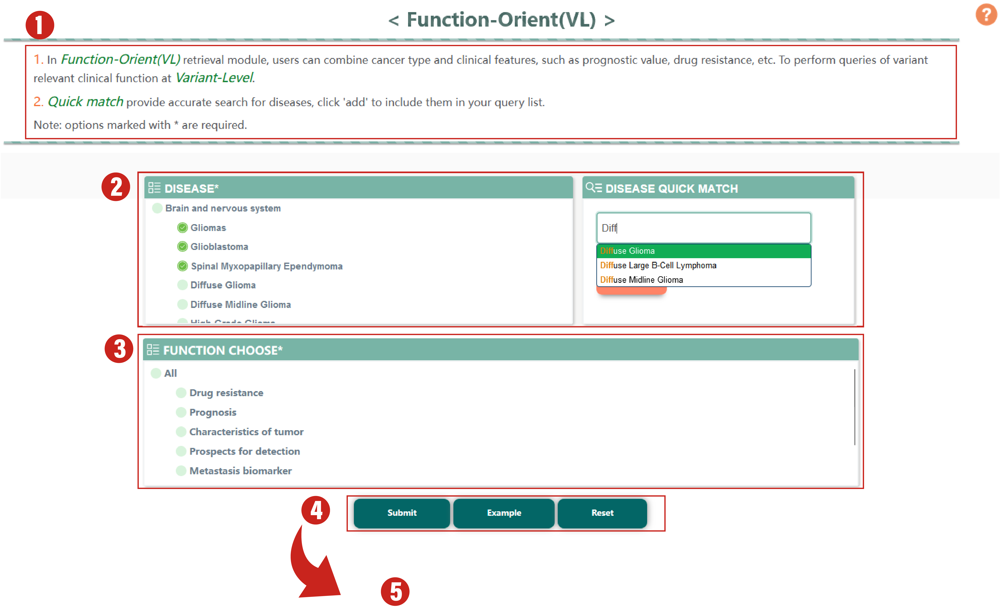
1. Basic introduction and data format explanation of the Gene-Orient (GL) interface.
2. Please select the diseases you wish to query. The right half of the interface allows for rapid matching and addition of diseases.
3. Please select the genes you wish to query. The right half of the interface allows for rapid matching and addition of genes.
4. 'Submit' allows users to submit queries, 'Example' provides query examples, and 'Reset' allows resetting all options.
5. Click to view the explanation of the query results for 'Gene-Orient (GL)'.
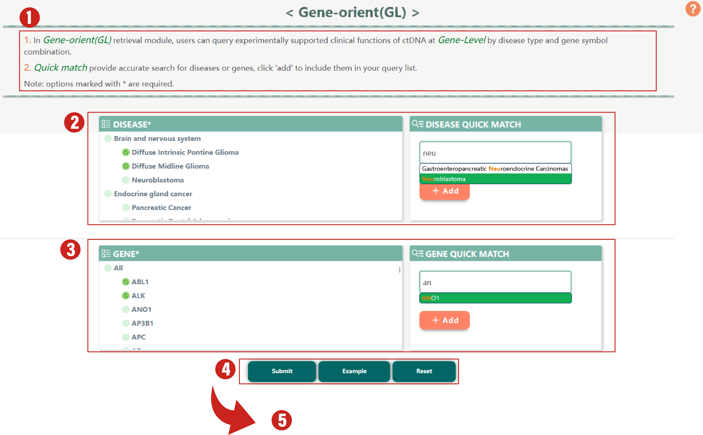
1. Basic introduction and data format explanation of the Function-Orient (GL) interface.
2. Please select the diseases you wish to query. The right half of the interface allows for rapid matching and addition of diseases.
3. Please select the clinical functions you wish to query related to genes.
4. 'Submit' allows users to submit queries, 'Example' provides query examples, and 'Reset' allows resetting all options.
5. Click to view the explanation of the query results for 'Function-Orient (GL)'.
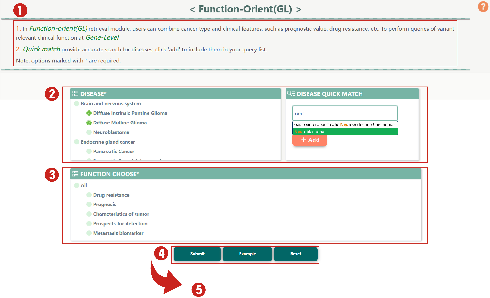
On the result page, all entries are listed with basic information including links to the detailed information, PMID, gene, variant type, variant description, disease, body fluid, sequencing method, experiment, drug resistance, disease prognosis, characteristic of tumors, prospects for detection, metastasis biomarker, therapy, and others.
1. Click to copy or download the table.
2. Users can input keywords from any column to filter the results.
3. Click to collapse or expand the detailed content of cells.
4. Users can drag the slide block to see complete information.
5. Click to check the detail information of the entry in.
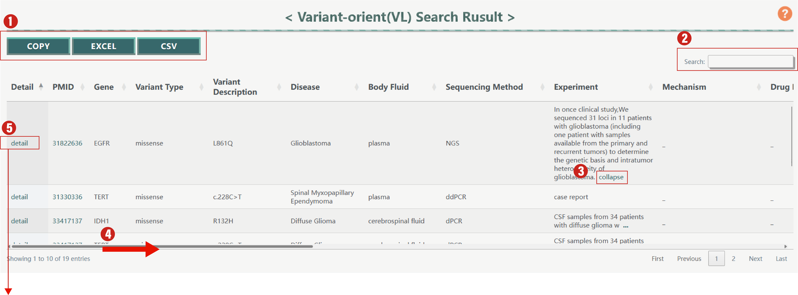
On the result page, all entries are listed with basic information including links to the detailed information, PMID, gene, disease, body fluid, sequencing method, experiment, drug resistance, disease prognosis, characteristic of tumors, prospects for detection, metastasis biomarker, therapy, and others.
1. Please Click to copy or download the table.
2. Users can input keywords from any column to filter the results.
3. Click to collapse or expand the detailed content of cells.
4. Users can drag the slide block to see complete information.
5. Click to check the detail information of the entry in.
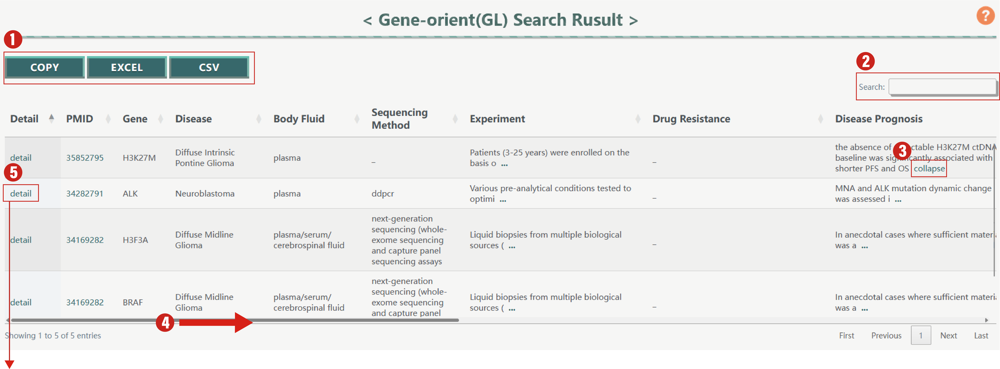
1. Users can access the basic information for the variant.
2. Users can access the experimental methods and sequencing techniques used.
3. Users can access clinical functional annotations related to variants, including drug resistance, disease prognosis, characteristics of tumors, prospects for detection, metastasis biomarkers, therapy strategies, and others.
4. Users can access information about the chain (+/-) where the mutation occurs, mutation coordinates at the gDNA, cDNA, and protein levels, as well as the genome source and version utilized for coordinate conversion.
5. The UCSC and the ENSEMBL genome hyperlinks can obtain variant distribution between +/- 10000bp intervals of the mutation site.
6. Users can access pre-mutation protein structures predicted by AlphaFold and download PDB files.
7. Users can search the external annotation information for the gene and mutation by clicking on the corresponding hyperlink logo.
8. Users can access after-mutation protein structures predicted by AlphaFold and download PDB files.
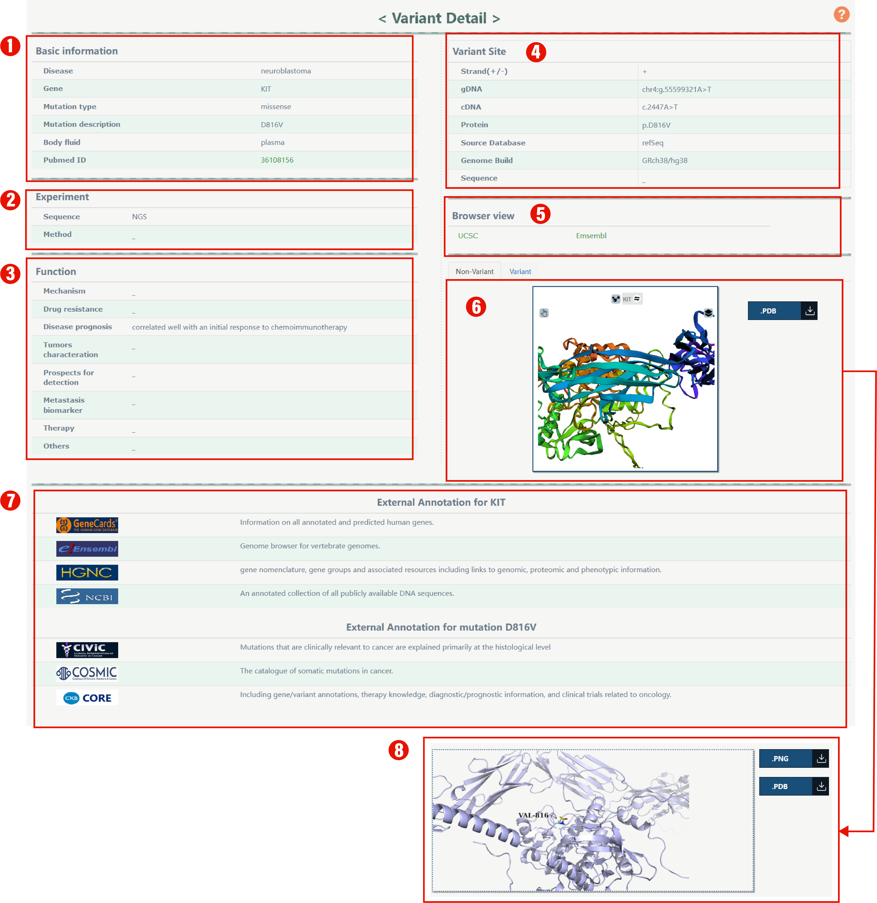
1. Users can access the basic information for the gene.
2. Users can access the experimental methods and sequencing techniques used.
3. The UCSC and the ENSEMBL genome hyperlinks.
4. Users can access clinical functional annotations related to genes, including drug resistance, disease prognosis, characteristic of tumors, prospects for detection, metastasis biomarker, therapy strategies, and others.
5. Users can search the external annotation information for the gene by clicking on the corresponding hyperlink logo.
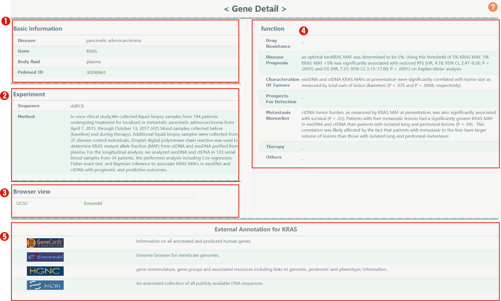
1. Basic introduction and data format explanation of the Search interface.
2. Please select the diseases you wish to query. The right half of the interface allows for rapid matching and addition of diseases.
3. Please select the genes you wish to query. The right half of the interface allows for rapid matching and addition of genes.
4. Please select the genomic elements you wish to query.
5. Input the chromosome and genome start/end sites of interest (optional) with the format: Chr17: 7574000-7575000.
6. 'Submit' allows users to submit queries, 'Example' provides query examples, and 'Reset' allows resetting all options.
7. Click to view the explanation of the query results for 'Search'.
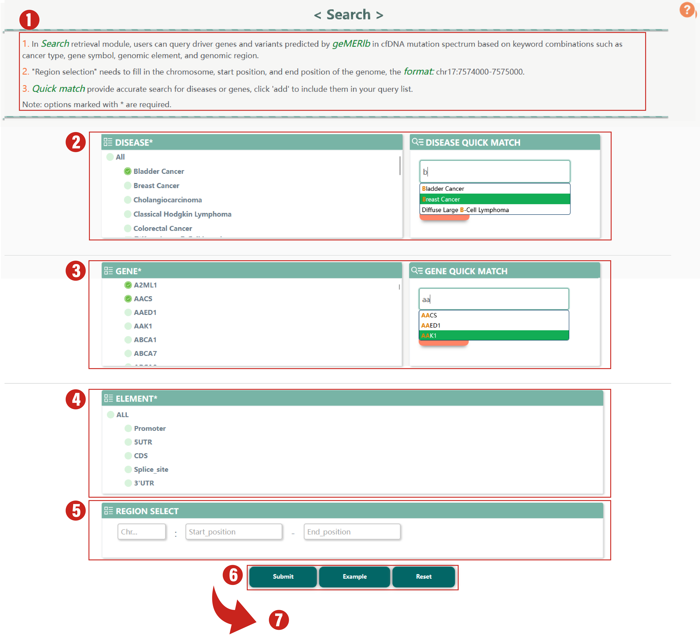
In the result page, Users can check detailed calculation results of ctDNA driver genes and tumor driver variants identified by the geMERlb pipeline, including disease, PMID, gene, survival, p, nMut, MAS.max, maxpos, MAS.min, minpos, MAS, Chromosome, ElementStart, ElementEnd, ElementLength, FDR, Elementkind, Reference_Genome, Start, End, Reference, Alteration, Mutation_type (parameter interpretation).
1. Please Click to copy or download the table.
2. Users can input keywords from any column to filter the results.
3. Click to check the prognostic value for the driver gene calculated from the ctDNA mutation spectrum.
4. Users can drag the slide block to see complete information in Fig 2.
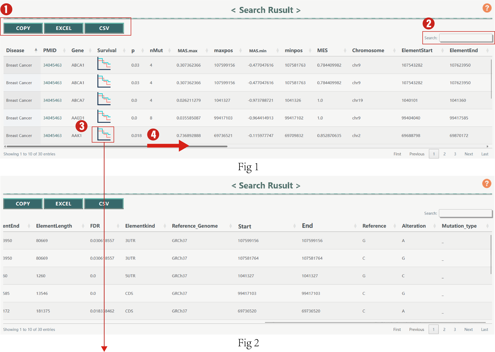
1. Patients' survival differences with mutation and without mutation group, and users can get the result with the Kaplan–Meier log-rank p-value.
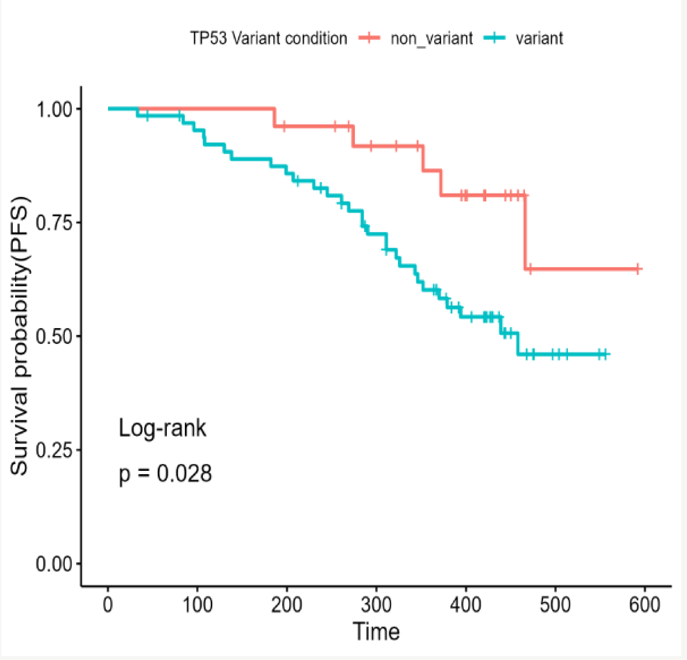
1. "Disease" : Disease type.
2. "PMID" : PMID of dataset source.
3. "Gene" : Driver gene symbol.
4. "Survival" : Prognostic value of driver gene.
5. "p" : p-value.
6. "nMut" : The mutation number of driver gene in mutation spectrum.
7. "MAS.max" : Maximum of MAS (mutation accumulation score).
8. "maxpos" : The genomic element position corresponding to the MAS maximum.
9. "MAS.min" : Minimum of MAS (mutation accumulation score).
10. "minpos" : The genomic element position corresponding to the MAS minimum.
11. "MES" : The maximum deviation of mutation accumulation score.
12. "Chromosome" : Chromosome.
13. "ElementStart" : The start position of element sequence.
14. "ElementEnd" : The end position of element sequence.
15. "ElementLength" : The length of element sequence.
16. "FDR" : The adjusted False Discovery Rate.
17. "Elementkind" : Gene element kind.
18. "Reference_Genome" : Reference genomic version.
20. "Start" : Start position (tumor driver variant) in the chromosome.
21. "End" : End position (tumor driver variant) in the chromosome.
22. "Reference" : Reference nucleotide.
23. "Alteration" : Alteration nucleotide.
24. "Mutation_type" : Type of mutation.
Design of geMERlb pipeline for identifying TDGs and TDVs in ctDNA
We introduce geMERlb (Genomic Element Mutation Enrichment Research in Liquid Biopsy) to identify tumor driver genes (TDGs) and variants (TDVs) in ctDNA by integrating nonsynonymous somatic mutations of liquid biopsy and the sequence information of genomic elements. The genomic element set containing the coding sequences (CDS) (n = 20,185), splice sites (n = 18,729), 3' untranslated regions (3' UTRs) (n = 19,369), 5' untranslated regions (5' UTRs) (n =19,188), and promoters (n = 20,164) were generated by PCAWG and downloaded from DriverPower. Their genome coordinates were converted from GENCODE v37 to GENCODE v38 by Liftover to align with somatic mutations annotated in different reference genomes.
geMERlb simulates a walker walking along the sequence of a given genomic element. Mutation Accumulation Score (MAS) represents the cumulative value recorded at each genome position, starting with 0, increasing if patients encounter mutations, and decreasing without a mutation. The increment () and decrement () of MAS are separately calculated by:
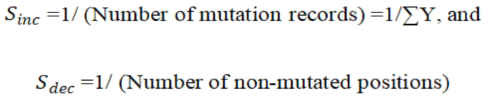
where Y represents a vector recording the number of mutations at each genome position, and L denotes the length of the genomic element sequence, that is, . The sum of MAS increments and MAS decrements both amounting to 1. Thus, MAS at the position is computed by:
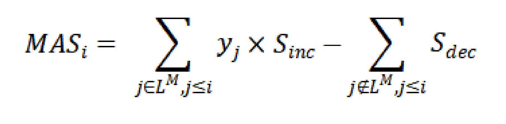
where denotes a vector of positions where mutations occur, and the increment at a mutant position is calculated by , where and , The decrease of positions without mutations is consistently . Therefore, MAS bridges of the genomic element sequence are expected to sharply increase over a short distance in a region with mutation enrichment. Mutation Enrichment Score (MES) is defined as the maximum deviation of MAS, representing the location of the mutation enrichment region (MER) and the abundance of mutation enrichment. Taking into account the positional order of the maximum MAS (maxMAS) and minimum MAS (minMAS) within the genomic sequence, We determine MER and MES as follows:
1) MER is identified as the region between the genomic position of minMAS and maxMAS when the genomic position coordinate of maxMAS is greater than minMAS’s. MES is calculated by:
Since MAS begins and ends with a value of 0, both the positions of maxMAS and minMAS can't simultaneously occur at the beginning and end of a genomic sequence. When the genomic position coordinate of maxMAS is less than that of minMAS,
2) If the maxMAS, with a value of 0, is located at the beginning of the genomic sequence, a novel maximum MAS (nvmaxMAS) is always present to the right of the minMAS coordinate. MER is defined as the region between the genomic position of minMAS and nvmaxMAS. MES is calculated by:
3) If the minMAS, with a value of 0, is located at the end of the genomic sequence, a novel minimum MAS (nvminMAS) will consistently be found to the left of the maxMAS coordinate. MER is defined as the region between the genomic positions of nvminMAS and maxMAS. MES is calculated by:MES is equal to maxMAS minus nvminMAS.
4) If minMAS and maxMAS are not located at the beginning or end of the genomic sequence, nvminMAS is always present to the left of the maxMAS coordinate, while nvmaxMAS is always situated to the right of the minMAS coordinate. MES is compared between the maxMAS minus nvminMAS group and the nvmaxMAS minus minMAS group. The MER is defined as the region between the genomic position of minMAS and maxMAS of the group with greater MES. MES is calculated by:
An empirical p-value is employed to assess the MES significance by a randomization-based test. The randomization process is conducted 1000 times. For each randomization, the number of mutations is kept the same as the actual mutation records, while the sites where mutations occur are randomly selected across the sequence, allowing for replacement. The p-value is calculated as:
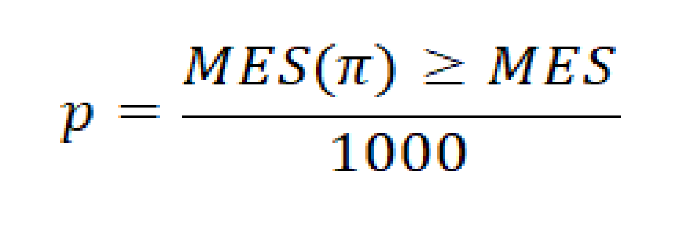
where is a MES vector of randomly selected mutations in the given genomic element. Benjamini-Hochberg procedure is applied to adjust the p-values. Genes with an adjusted p-value (adj.p) < 0.05 are considered as TDGs for the given element and the variants within MER are defined as TDVs.
Schematic of the algorithm for identifying mutation enrichment region for genomic element
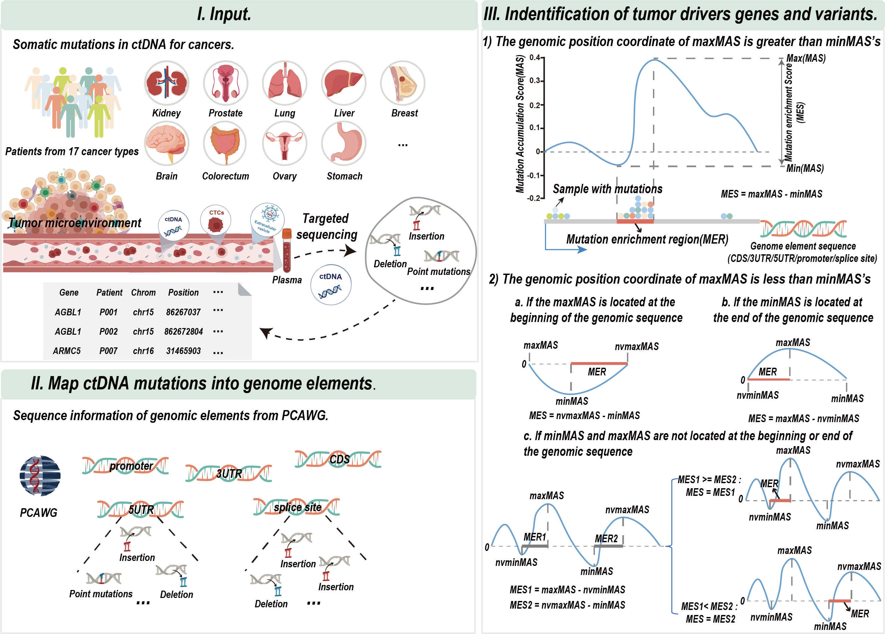
In the tools module, users can upload ctDNA mutation spectra (required). It will calculate tumor driver genes and variants through the geMERlb pipeline. If users also upload the patient's survival data (optional), the server could evaluate the prognostic significance of driver genes.
Variant.txt (Fig 1) and Survival.txt (Fig 2) file format instruction:
1. The 'Tumor_Sample_Barcode' column as patient ID.
2. The 'Chromosome' column as the chromosome where the mutation is located.
3. The 'Start_Position' column as the starting position of the mutation on the genome.
4. The 'End_Position' column as the ending position of the mutation on the genome.
5. The 'Hugo_Symbol' column as gene symbol.
6. The 'Reference' column as the nucleotide sequence before the mutation, using '_' to indicate unknown bases.
7. The 'Alteration' column as the nucleotide sequence after the mutation, using '_' to indicate unknown bases.
8. The 'Mutation_type' column as the mutation type, using '_' to indicate unknown types. allowed types include:
'MISSENSE', 'EXON', 'FRAMESHIFT', 'NONSENSE', 'SILENT', 'PROTEINDEL', 'PROTEININS', 'SPLICE_REGION', 'SPLICE', 'INTRON', 'UTR_3', 'UTR_5', 'NONSTANDARD', 'NONCODING', 'SNV', 'MNV', 'insertion', 'Small_deletion'.
9. The 'patient_id' column as patient ID.
10. The 'status' column as the survival or disease progression status of the patient at the last follow-up.
11. The 'PFS' as progression-free survival, which can be replaced by 'OS' (overall survival).
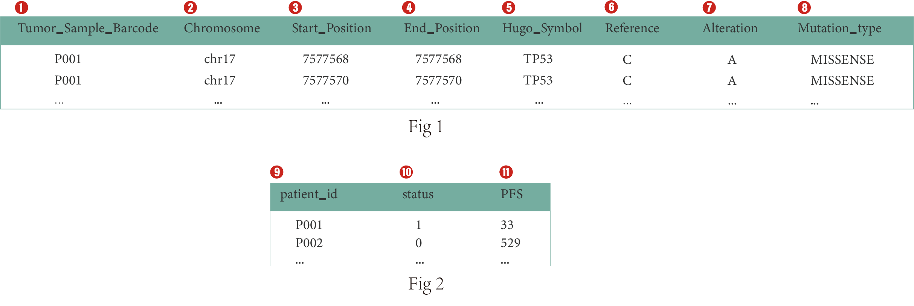
Interface introduction:
1. Basic introduction and data format explanation of the tools interface.
2. Select the mutation spectrum and the patient survival file that needs to be analyzed. The mutation spectrum is required, and the patient survival file is optional. The file format is shown in the example file.
3. Users can download sample files.
4. Select reference genome version.
5. Users can fill in the mail address to receive notifications in the 'E-Mail' section. If you haven't provided the email address, please refrain from taking any further actions on the page until the analysis is complete.
6. 'Submit' allows users to submit analysis.
7. Click to view the explanation of the analysis results.
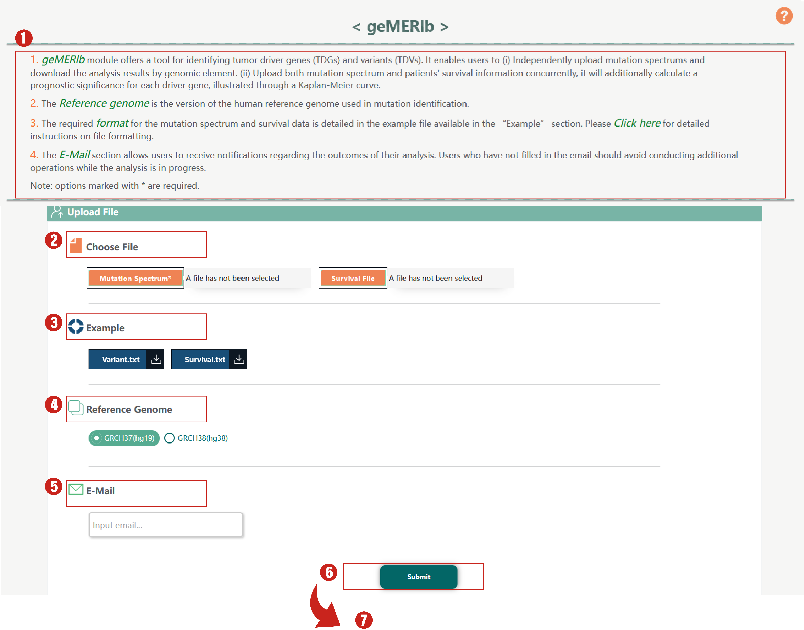
1. Users can download the analysis results of different genomic regions such as 3'UTR, 5'UTR, CDS, promote, and splice site separately (Parameter illustration same as above).
2. Users can select different driver genes to view the tumor driver variants (TDGs) distribution and evaluates the prognostic significance of potential TDGs.
3. Visualize tumor driver variants distribution within the driver gene on the genome using the ProteinPaint plugin(https://viz.stjude.cloud/tools/proteinpaint), the color of the dots represents different types of mutations. Users can export images in SVG format at the 'more' section
4. Patients' survival differences with and without driver gene mutation group, and users can get the result with the Kaplan–Meier log-rank p-value.

User can explore the overlap between novel identified driver genes and pre-existing driver gene sets, as well as their association with the ten cancer hallmarks.
1. Please select the cancer type of interest and the set of driver genes identified by geMERlb.
2. Export the data and images.
3. The intersection between the newly identified driver gene set, the previously identified ctDNA driver gene set, and the driver gene set recognized in the TCGA tissue mutation profile.
4. The overlap between the newly identified driver gene set and the ten cancer hallmarks gene sets (Self-Sufficiency in Growth Signals, Insensitivity to Antigrowth Signals, Evading Apoptosis, Limitless Replicative Potential, Sustained Angiogenesis, Tissue Invasion and Metastasis, Genome Instability and Mutation, Tumor-Promoting Inflammation, Reprogramming Energy Metabolism, Evading Immune Detection).
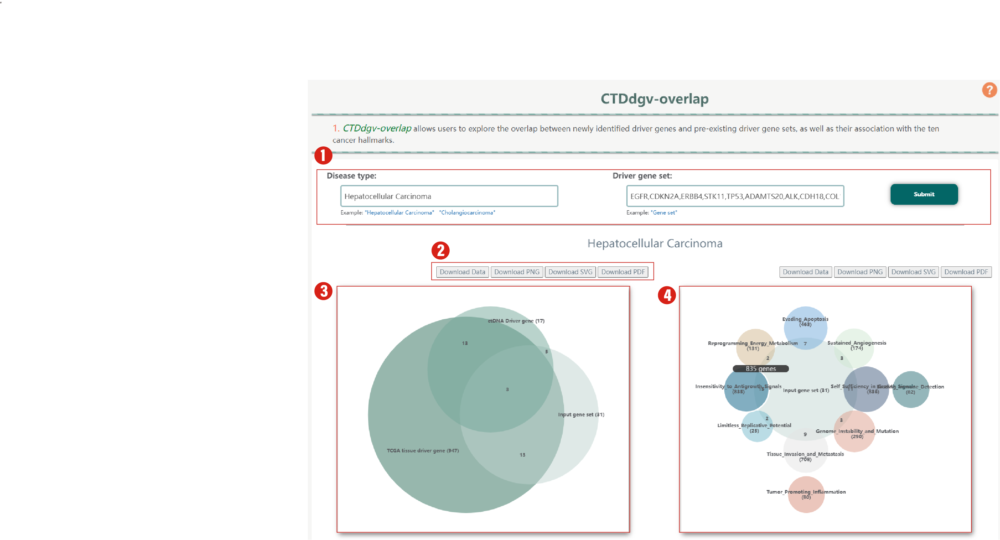
User can explore the function of identified driver gene sets in ctDNA and tissue based on Gene Ontology (GO) terms and KEGG pathways.
1. Please Select the cancer type of interest.
2. Display the top 20, 25, or 35 Gene Ontology (GO) terms and KEGG pathways, and export the data and images.
3. The KEGG pathways enriched in the ctDNA driver gene set, which was identified by geMERlb.
4. The Gene Ontology (GO) terms enriched in the ctDNA driver gene set, which was identified by geMERlb.
5. The KEGG pathways enriched in the tissue driver gene set, which was identified by geMERlb.
6. The Gene Ontology (GO) terms enriched in the tissue driver gene set, which was identified by geMERlb.
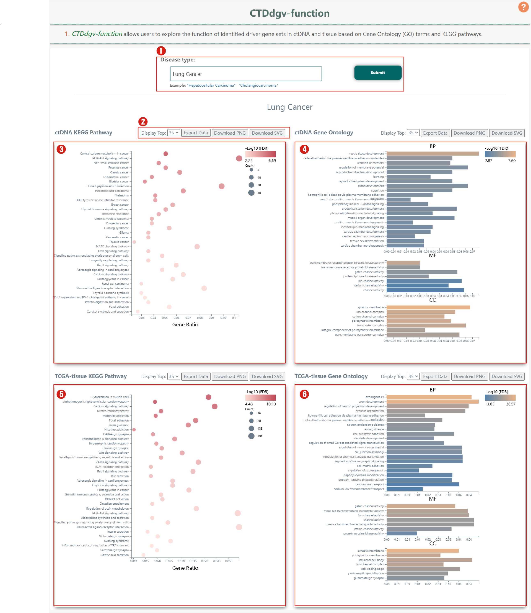
User can explore the prognostic significance of identified driver genes in ctDNA and tissue.
1. Please select the cancer type and driver genes of interest.
2. Evaluate the prognostic significance of cancer driver genes in the ctDNA dataset.
3. Evaluate the prognostic significance of cancer driver genes in the TCGA tissue dataset.
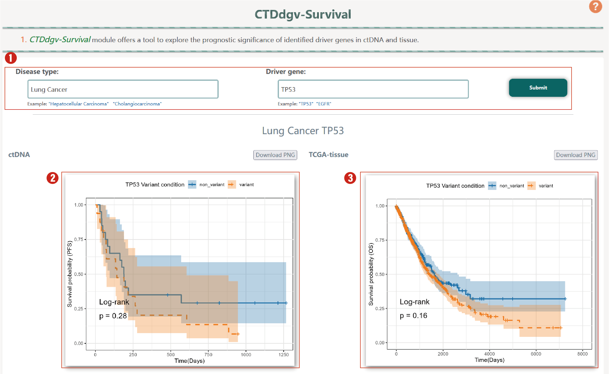
User can study the expression patterns through which the identified ctDNA and tissue driver genes exert their oncogenic effects.
1. Please select the cancer type of interest.
2. The expression landscape of identified ctDNA driver genes in TCGA expression profile.
3. The expression landscape of identified tissue driver genes in TCGA expression profile.
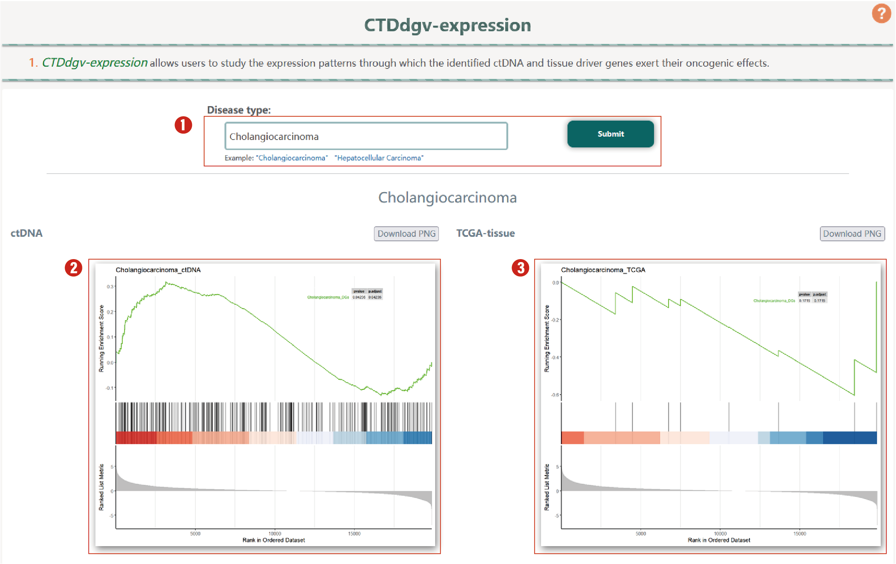
1. Users can search for mutations here (format: chr1:1-1000), as well as zoom in and out genome views.
2. Click to open the track selector 3.
3. The genome browser includes experimentally verified mutations, identified tumor driver variants, and mutations from external databases. All experimentally verified mutations are integrated into one track, while identified tumor driver variants are divided into different tracks, and organized catalog according to cancer types.
4. Experimentally verified mutation track, click 5 to obtain detailed information on specific mutations.
6. One of the driver variant tracks (Prostate Cancer) identified by geMERlb, click 7 to obtain detailed information about the hotspot mutation.
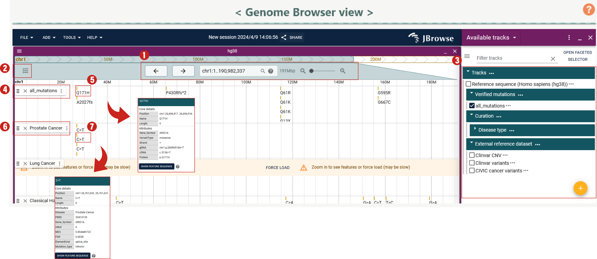
1. Click to download raw data of ctDNA mutation spectra (Fig 1).
2. Users can obtain the information about mutation spectra and download the mutation spectra and survival files.
3. Click to download curated data (Fig 2).
4. Users can perform bulk downloads of the Variation-Levels data experimentally verified.
5. Users can perform bulk downloads of the Gene-Levels data experimentally verified.
6. Users can perform bulk downloads of all tumor driver genes and variants identified by the geMERlb.
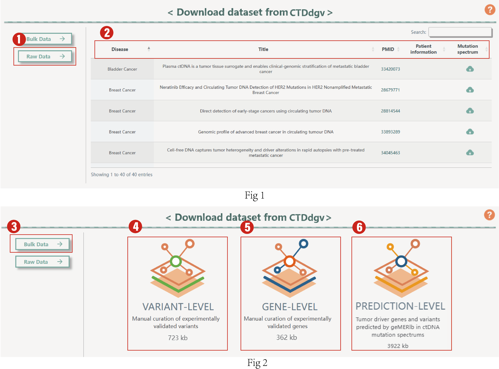
The "Submit" page provides a strategy for sharing experiments validated variants data for CTDdgv update. The submitter is required to fill in the relevant information for the variant, as well as the user's e-mail. Please use "-" instead of in the unknown option. Refer to the following example:
1. "PaperDoi" should be filled with the DOI number of the reference literature.
2. "DiseaseName" should be filled with the name of the disease related to the experimentally verified variant.
3. "Gene" should be filled with the gene symbol involved in the experimentally validated variant, such as TP53, KRAS, GNA11, etc.
4. "VariantType" should be filled with the type of the experimentally validated variant, such as Missense, methylation, indel, etc.
5. "VariantDescription" should be filled with a detailed description of the experimentally validated mutation, such as G12C, c.1789A>T, PAX3-NCOA1 fusion, etc.
6. "BodyFluid" should be filled with the type of body fluid used in the liquid biopsy, including plasma, urine, cerebrospinal fluid, pleural effusion, sputum, semen, etc.
7. "Experiment" should be filled with the experimental method or a summary of the experimental process.
8. "Function" should be filled with the clinical function (interpretation) related to the experimentally validated variant.
9. "SequenceMethod" should be filled with the sequencing technique used in the liquid biopsy, such as NGS, ddPCR, etc.
10. "Email" should be filled with the email address of the submitter.
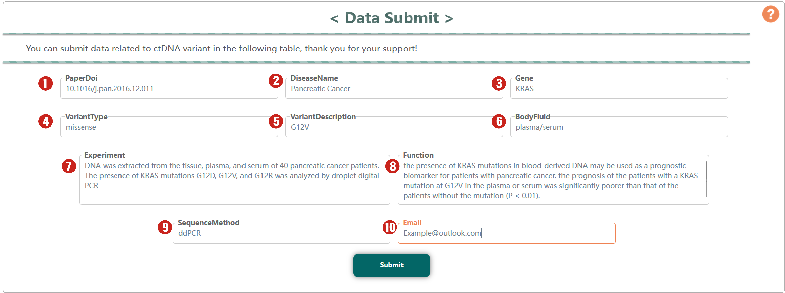